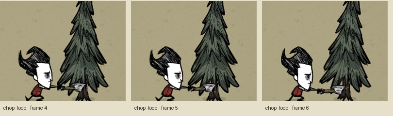

返回试玩
威尔逊 · 原作动作对照
持斧侧跑
单机版 · Klei 实机预告
本地 · 持斧按 D
背向连续砍树
单机版 · Klei 实机预告
本地 · 按住 L
两侧均以实速播放，截取同一朝向。右侧使用联机版专服的动作与图层，工作节奏取自单机角色状态机。原作镜头有取景和剪辑。
侧向斧刃接触

从左至右为 chop_loop 第 4、5、6 帧，从 0 编号。中图触发砍伐反馈。
完整键盘操作录像
Klei 单机实机预告
制作记录